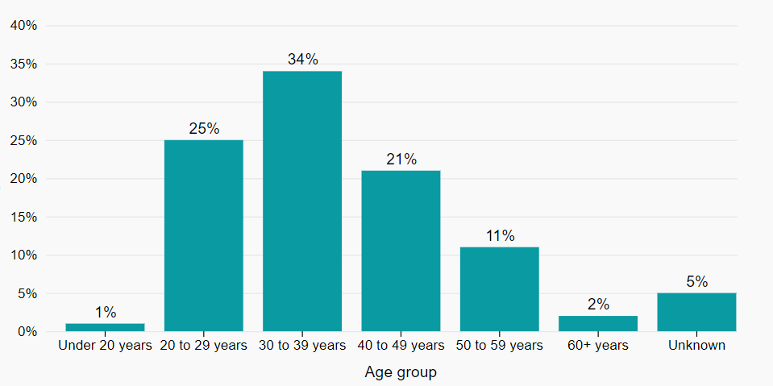

Health Infobase Design Manual
Table of contents
Design
On this page
Part of Canada.ca
The Health Infobase is part of the Canada.ca ecosystem - it’s part of the Government of Canada web presence. As such, the overall design of data products needs to respect the mandatory elements of the Canada.ca design system. You also need to follow the Canada.ca Content style guide.
Also, when possible and appropriate, it’s a good idea to use patterns from the Canada.ca design system
However, the Canada.ca design system leaves room for creativity ( as long as the Canada.ca brand elements are respected). In the end, usability is more important than conformity: the most important thing is to design a data product that will help people complete their tasks.
Colours
Always select colours intentionally and carefully.
Why use colours
Using the right colour scheme can help people quickly understand your visualization.
Choosing a colour palette
Consider the following when choosing a colour palette:
- colours should be easy to distinguish from each other
- generally, you can use warm colours for positive values, and cool colours for negative values
- try to limit the number of different colours in your visualization
Different types of colour palettes can be used depending on the purpose of the visualization:
Qualitative
Use a qualitative colour palette for distinct categories that don’t have a relationship between each other. Use completely and clearly distinct colors to avoid suggesting a relationship between categories.
Here’s an example of an accessible colour palette:
These colors provide enough contrast for individuals with visual impairments, and the use of distinct, unrelated colors makes it easy to distinguish between different categories or groups on a chart or graph.
Sequential
Use sequential palettes to show a progression in values (from low to high, for example, or from bad to good). Use an ordered sequence of colours, from light to dark, or from low saturation to high saturation.
Here’s an example of an accessible, sequential color palette:
These colors provide enough contrast for individuals with visual impairments, and the sequential nature of the palette (moving from light to dark colors) makes it easy to distinguish between different data points on a chart or graph.
Divergent
Use a divergent color palette when you want to represent opposite or contrasting values, each side of an average or neutral value. Use a gradient that transitions from one color to another, with a neutral color in the middle. For example, you could represent cold temperatures in shades of blue, average temperatures in a neutral colour, and warm temperatures in shades of red.
Here’s an example of an accessible, diverging color palette:
These colors provide enough contrast for individuals with visual impairments, and the diverging nature of the palette (moving from cool to warm colors) makes it easy to distinguish between different data points on a chart or graph.
More information on colours
- 7 Best Practices for Using Color in Data Visualizations | Sigma Computing
- When to Use Sequential and Diverging Palettes
- Color schemes types - Color Brewer
Axis and labels
Use labels and annotations to explain data points and provide context to users.
Follow these recommendations:
- when possible, include the label directly with the line or bar, instead of on the axis
- avoid using jargon and acronyms, unless you are absolutely certain it’s understood by your audience
- labels should be horizontal (not vertical or diagonal). See alternatives to diagonal axis labels — storytelling with data
- start the axis at 0 in bar charts. In line charts, it is possible to cut the axis to better show the trend
- tick marks on the axis are not always necessary
Grids
Don’t clutter the chart with full grid lines.
Generally, only include horizontal grids, and make them light gray.
For example:
Accessibility
Accessibility is not optional. Every single product in the Infobase needs to be fully accessible.
Do
- Provide key insights from the data
- Use clear labels and legends
- Provide a data table for each visualization
- If the visualization tells a story, convey it in words too
- Use accessibility assessment tools
- Use proper contrast between elements (use accessibility checkers like Contrast Checker - WebAIM)
- Consider using a palette adapted for color blindness
- Test with people with disabilities
Don't
- Rely strictly on visually cues (colour or shape) to convey meaning
- Use low contrast between items
- Rely solely on interactions to find the key insights
- Leave any empty table cells
- Use the same ID multiple times on a page
- Date modified: